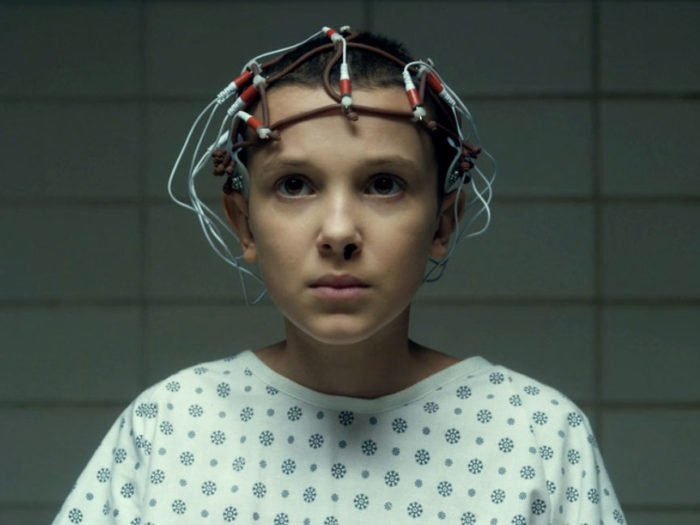

Eleven is the daughter of Teresa "Terry" Ives, a participant in the Project MKUltra experiments conducted by the United States Central Intelligence Agency (CIA). Eleven was taken from her mother at birth by Dr. Martin Brenner and was raised in the Hawkins National Laboratory in Hawkins, Indiana as a test subject to develop her psychokinetic skills. When placed in a sensory deprivation tank she can engage in astral projection and access other dimensions, primarily for the purposes of international espionage. Eleven encounters a creature living in the Upside Down dimension, and on the evening of November 6, 1983, she finally makes contact with it. In efforts to make contact, Eleven opens a gate between the Hawkins Laboratory and the Upside Down dimension and the creature gains the ability to travel between the human world and the Upside Down.
